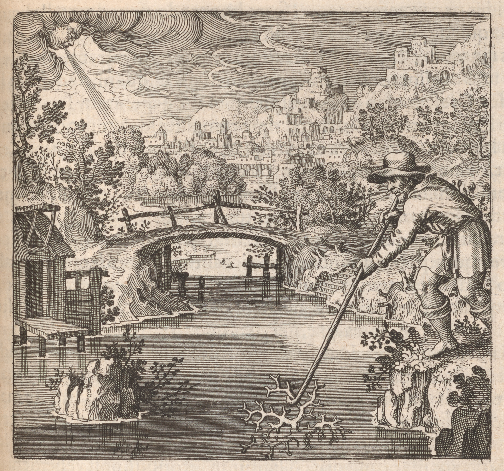

137
Embleme Emblem 32. Of the Secrets of Nature.
As Corall Coral growes grows under water, and is hardened by the aire air,
Soe So allso also is the Stone.
Emblema XXXII. De Secretis Naturae
FUGA XXXII. in 5 suprà.
Die Corallen / wie sie wachsen unterm Wasser / und durch
die Lufft erhartet werden / also auch der Stein.

Epigramme Epigram 32.
In the Sicilian waves a Sea=plant growes grows,
Shooting forth many moist and plyant pliant boughs:
Corall Coral it is by name; whose nature's such,
That, if exposed to th' the aire air, it alters much,
And A blood red rocke rock becoming: which alone
Exactly repræsents represents the Sophicke Sophic stone.
Epigramma XXXII.
Planta maris vegetans Siculi sub fluctibus uda
Ramos sub tepidis multiplicavit aquis.
Illa, Corallus, habet nomen sibi durior exit,
Cùm Boreas rigido mittit ab axe gelu:
Fit lapis, & rubeum multâ cum fronte colorem
Possidet: hæ[ae]c Physicæ[ae] est apta figura Petræ[ae].
XXXII. Epigrammatis Latini versio Germanica.
Win Pflanze seucht / wachsend im Meer von Sicilen nicht weit /
Unterm warmen Wasser hat sein Zweiglein fein außgebreitt /
Deß Namen ist Corallen / weich in Härte bald sich thut endern /
Wann nur ein trockner Wind wehnet von kalten Ländern /
Es wirt zum Stein / und behält sein rohte Farbe und Zweig viel /
Diß ist deß natürlichen Steines bequemlich Beijspeil.
138
The Philosophers call their Stone vegetable, because it vegetates, growes grows, e03-01
is increasd increased and multiplyd multiplied as a plant: which indeed to the ignorant seems
strange and contrary to truth; it being manifest that stones doe do neither
vegetate, nor grow after this manner, nor any thing at all relate to
liquable metalls metals: but they are deceived in their judgment: for that which
is unknowne unknown to them they suppose is not in rerum natura, measuring
the immensity of the universe by their capacity: For who could ever
have beleived believed that a stone should grow under water, or a plant there ge=
nerated become a stone, if experience together with the credible testimo=
nyes testimonies of writers had not confirmd confirmed it? where is that petrefying petrifying, where
that tinging virtue, which hardeneth hardens and tingeth tinges Corall Coral, whether in the
water, or in the aire air, or in the earth? wee we may reasonably beleive believe it
to be, as they affirme affirm, a soft and flexible plant, whilst it is under wa=
ter, yet of a very terrestriall terrestrial nature, which, when it is cut of off and exposed
to the cold winds, becomes hard, and acquires a stony frangibility, the
watry watery parts abounding being dryed dried up by the cold and dry aire air (for these
North winds blowing doe do introduce siccity) and the terrestriall terrestrial body
remaining congealed with cold and siccity bying being the qualityes qualities of the earth:
for constriction appertaines appertains to the earth alone, not to the water, nor aire air,
as to the proper and genuine virtues of either. Besides the sea in other
places yeilds yields three medicinall medicinal stones deduced partly from the vegetable
kind, partly from the animall animal, or rather partly from the secrets of na=
ture; as Pearls, Ambar Amber, and Ambar=grise Ambergris: the production of Pearls,
and the way of taking them have been knowne known to us, but not of the
rest: Ambar Amber is found and gathered on the Sea coasts of Sudavia, on the
shoars shores, after a most vehement South or westerly wind, which without
doubt boyles boils out of the veins of the earth into the Sea, or is washd washed
out by the water, and driven by the waves to the shoars shores: For wee we
have seen some veins of iron and Silver swimming with the Ambar Amber,
which could not be done but in the earth. But as to the flyes flies, gnatts gnats,
Spiders, Butterflyes Butterflies, froggs frogs, Serpents which are seen in some peices pieces (as
wee we have had 120 beads turned out of Ambar Amber, which did every one
containe contain some flyes flies, gnatts gnats, Spiders, butterflyes butterflies, and one particle nine,
not without a singular miracle of nature) that happens by the influ=
ence and imagination of the heaven; as wee we have elswhere elsewhere demon=
strated.
Discourse 32.
The Philosophers call their Stone vegetable, because it vegetates, growes grows, e03-01
is increasd increased and multiplyd multiplied as a plant: which indeed to the ignorant seems
strange and contrary to truth; it being manifest that stones doe do neither
vegetate, nor grow after this manner, nor any thing at all relate to
liquable metalls metals: but they are deceived in their judgment: for that which
is unknowne unknown to them they suppose is not in rerum natura, measuring
the immensity of the universe by their capacity: For who could ever
have beleived believed that a stone should grow under water, or a plant there ge=
nerated become a stone, if experience together with the credible testimo=
nyes testimonies of writers had not confirmd confirmed it? where is that petrefying petrifying, where
that tinging virtue, which hardeneth hardens and tingeth tinges Corall Coral, whether in the
water, or in the aire air, or in the earth? wee we may reasonably beleive believe it
to be, as they affirme affirm, a soft and flexible plant, whilst it is under wa=
ter, yet of a very terrestriall terrestrial nature, which, when it is cut of off and exposed
to the cold winds, becomes hard, and acquires a stony frangibility, the
watry watery parts abounding being dryed dried up by the cold and dry aire air (for these
North winds blowing doe do introduce siccity) and the terrestriall terrestrial body
remaining congealed with cold and siccity bying being the qualityes qualities of the earth:
for constriction appertaines appertains to the earth alone, not to the water, nor aire air,
as to the proper and genuine virtues of either. Besides the sea in other
places yeilds yields three medicinall medicinal stones deduced partly from the vegetable
kind, partly from the animall animal, or rather partly from the secrets of na=
ture; as Pearls, Ambar Amber, and Ambar=grise Ambergris: the production of Pearls,
and the way of taking them have been knowne known to us, but not of the
rest: Ambar Amber is found and gathered on the Sea coasts of Sudavia, on the
shoars shores, after a most vehement South or westerly wind, which without
doubt boyles boils out of the veins of the earth into the Sea, or is washd washed
out by the water, and driven by the waves to the shoars shores: For wee we
have seen some veins of iron and Silver swimming with the Ambar Amber,
which could not be done but in the earth. But as to the flyes flies, gnatts gnats,
Spiders, Butterflyes Butterflies, froggs frogs, Serpents which are seen in some peices pieces (as
wee we have had 120 beads turned out of Ambar Amber, which did every one
containe contain some flyes flies, gnatts gnats, Spiders, butterflyes butterflies, and one particle nine,
not without a singular miracle of nature) that happens by the influ=
ence and imagination of the heaven; as wee we have elswhere elsewhere demon=
strated.
139That Ambar=grise Ambergris is found after the same manner on the
Shoars Shores of the east and west Indyes Indies, cannot be denyd denied, and though
some declare it to be the juice or gumme gum of trees, as the Ambar Amber
aforesayd aforesaid, yet they that conceive it to proceed out of veins of the
earth doe do judge more probably: For fruitfull fruitful trees of Ambar Amber have
been in noe no place seen, which notwithstanding, if there be, doe do
most certainly grow out of the water in the open aire air: Wee We 103Discourse 32.
therefore ascribe both sorts of Ambar Amber to subterranean veins or stones, as
Pearls to Zoophytes (that is, a midle middle nature between animall animal and plant)
and Corall Coral to vegetables. The Philosophers stone is indeed like to these stones
and especially to Corall Coral: for as Corall Coral growes grows in water, and drawes draws nutriment
from the earth; soe so allso also the Philosophicall Philosophical stone growes in Mercuriall Mercurial
water, and from it receives whatsoever is earthy, for the augmentation of it=
selfe itself, the superfluous moisture expiring. A red colour color is allso also fixed in Corall Coral
by coagulation, which modern authors call the tincture of Coralls Corals, noe no other=
wise than as in the Physicall Physical stone, which becomes red in the last coagu=
lation of it, and appears like the reddest Corall Coral, which is the tincture:
but as Corall Coral becomes hard by cold and siccity, soe so that by heat and sicci=
ty, which being augmented it likewise dissolves, contrary to the nature of
other stones, which doe do indeed , but turne turn into glasse glass, which thing
is noewise nowise agreable agreeable to this: And as Corall Coral is præpared prepared into severall several medi=
cines of great virtue, soe so allso also hath has the Philosophicall Philosophical Corall Coral transferrd transferred
the virtues of all herbs into itselfe itself, soe so that is alone is able to performe perform
as much as all the medicines of all vegetables: For the cælestiall celestial Sunne Sun,
which infuseth infuses medicinall medicinal virtue and efficacy into vegetables, contributes
to this its Sonne Son and terrestriall terrestrial deputy more, than to all others: This is
the Philosophicall Philosophical vegetable, animall animal, and minerall mineral Corall Coral, which lyes lies
occult in the vast ocean, and is not knowne known, except it be exposed to the
eyes and put into the hands of the ignorant: But it must be cut of off in
the water with very great caution, lest it loose lose its juice and blood, and
nothing remayne remain but a terrestriall terrestrial chaos without its true forme form: For
herein consists all the difficulty of taking corall coral, besides which there is
scarce any: The superfluous moisture. I meane mean, which kills the stone,
unlesse unless it be separated, which suffers not the coralline coraline rednesse redness to
appear, which admitts admits not coagulation, whilst it is therein . . . . .
Avoid all disputes as much as poss
Beware of all unruly passions
Crave the divine protection
Demonstrate your care by improvem
Shoars Shores of the east and west Indyes Indies, cannot be denyd denied, and though
some declare it to be the juice or gumme gum of trees, as the Ambar Amber
aforesayd aforesaid, yet they that conceive it to proceed out of veins of the
earth doe do judge more probably: For fruitfull fruitful trees of Ambar Amber have
been in noe no place seen, which notwithstanding, if there be, doe do
most certainly grow out of the water in the open aire air: Wee We 103Discourse 32.
therefore ascribe both sorts of Ambar Amber to subterranean veins or stones, as
Pearls to Zoophytes (that is, a midle middle nature between animall animal and plant)
and Corall Coral to vegetables. The Philosophers stone is indeed like to these stones
and especially to Corall Coral: for as Corall Coral growes grows in water, and drawes draws nutriment
from the earth; soe so allso also the Philosophicall Philosophical stone growes in Mercuriall Mercurial
water, and from it receives whatsoever is earthy, for the augmentation of it=
selfe itself, the superfluous moisture expiring. A red colour color is allso also fixed in Corall Coral
by coagulation, which modern authors call the tincture of Coralls Corals, noe no other=
wise than as in the Physicall Physical stone, which becomes red in the last coagu=
lation of it, and appears like the reddest Corall Coral, which is the tincture:
but as Corall Coral becomes hard by cold and siccity, soe so that by heat and sicci=
ty, which being augmented it likewise dissolves, contrary to the nature of
other stones, which doe do indeed , but turne turn into glasse glass, which thing
is noewise nowise agreable agreeable to this: And as Corall Coral is præpared prepared into severall several medi=
cines of great virtue, soe so allso also hath has the Philosophicall Philosophical Corall Coral transferrd transferred
the virtues of all herbs into itselfe itself, soe so that is alone is able to performe perform
as much as all the medicines of all vegetables: For the cælestiall celestial Sunne Sun,
which infuseth infuses medicinall medicinal virtue and efficacy into vegetables, contributes
to this its Sonne Son and terrestriall terrestrial deputy more, than to all others: This is
the Philosophicall Philosophical vegetable, animall animal, and minerall mineral Corall Coral, which lyes lies
occult in the vast ocean, and is not knowne known, except it be exposed to the
eyes and put into the hands of the ignorant: But it must be cut of off in
the water with very great caution, lest it loose lose its juice and blood, and
nothing remayne remain but a terrestriall terrestrial chaos without its true forme form: For
herein consists all the difficulty of taking corall coral, besides which there is
scarce any: The superfluous moisture. I meane mean, which kills the stone,
unlesse unless it be separated, which suffers not the coralline coraline rednesse redness to
appear, which admitts admits not coagulation, whilst it is therein . . . . .
Avoid all disputes as much as poss
Beware of all unruly passions
Crave the divine protection
Demonstrate your care by improvem
138
e32-01Philosophi vocant lapidem suum vegetabilem, quia instar
plantæ[ae] vegetet, crescat, augmentetur & multiplicetur: quod
quidem ignaris mirum & à veritate alienum videtur; cùm constet
lapides nec vegetare, nec crescere hoc modo, nec ad metalla liqua-
bilia quicquam spectare: e32-02sed illi falluntur suo judicio: Quod enim
illis ignotum est, id non extare in rerum natura arbitrantur, metien-
tes universi immensitatem suo captu: e32-03Quis unquam credidisset la-
pidem crescere sub aquis , vel plantam ibi generatum lapidescere
nisi Experientia & constans scriptorum fides id comprobaret? e32-04ubi
illa lapidifica, ubi colorativa vis, quæ[ae] corallum indurat & tingit, ex-
istit, an in aquis, an in aëre, an in terra? plantam esse mollem & plica-
tilem, dum est sub aquis, ut affirmant, verisimile est, valdè tamen
terrestris naturæ[ae], quæ[ae] dum resecatur & ventis frigidis exponitur, in-
durescit & lapideam frangibilitatem acquirit, dum à frigido & sicco
aëre aqueæ[ae] partes abundantes exiccantur (hi enim septentrionales
suo flatu siccitatem inducunt) & reliquum corpus terreste à ter-
ræ[ae] qualitatib.[qualitatibus] frigiditate & siccitate, congelatur: e32-05Sola enim constri-
ctio inest terræ[ae], non aquæ[ae], nec aëri, quo ad virtutes cujuslibet et pro-
prias & genuinas. e32-06Dat præ[ae]terea mare aliis in locis tres lapides
medicinales partim ex vegeabili genere, partim ex animali,
aut potius partim ex naturæ[ae] arcanis depromptos; utpote mar-
garitas, succinum & ambram gryseam: e32-07Margaritarum proven-
tus & captura nobis innotuerunt, at non reliquorum: Succinũ[Succinum]
in Sudaviæ[ae] maritimis oris colligitur, in littoribus, post vehementio-
rem flatum Circii sive Cori, quod absque dubio ex terræ[ae] venis in
mare ebullit, vel ab aquis eluitur, & fluctibus ad littora impellitur.
Nam mineras quasdam, ferri & argenti succino adnatas vidimus,
quid fieri non potuit, nisi in terra. e32-08Quod verò muscæ[ae], culices, aranei,
papiliones, ranæ[ae] & serpentes in quibusdam frustulis cernantur
(quemadmodum nos 120 globulos ex succino tornatos habuimus,
qui singuli muscas, culices, araneas, papiliones aliquot continuerũt[continuerunt]
una etiam particula 9. non sine naturæ[ae] singulari miraculo) ex pro-
fluentia & imaginatione cœ[oe]li accidit; ut alibi demonstravimus.
139
e32-09Ambra Grysea quo eodẽ[eodem] modo in Indiæ[ae] orientalis & occidentalis
littoribus inveniatur, negari non potest & quamvis quidam ad ar-
borum succum seu gummi (uti succinum ante dictum) eam referãt[referant],
qui tamen ex terræ[ae] venis prodire existiment probabiliùs judicant:
Arbores enim ambræ[ae] succiníque feraces nusquam visæ[ae] sunt, quas
tamen extra aquam in aprico crescere, si sint, certissimum est. e32-10Ad
venas itaque subterraneas seu lapides, utramque ambram referi-
mus, uti margaritas ad Zoophyta, & corallum ad vegetabilia. e32-11Assi-
milatur verò his lapidib.[lapidibus] & inprimis corallo, Philosophorum lapis.
Nam ut corallus in aquis crescit & ex terra nutrimentum sumit;
sic & lapis Philosophicus ex mercuriali aqua cõcrescit[concrescit] & ex ea quic-
quid est terreum assumpsit ad sui augmentationem, humiditate suꝑfluâ[superflua] expirãte[expirante]. e32-12Color quoq;[quoque] rubeus illi ex coagulatione intenditur,
quem recentiores vocant tincturam coralliorum, non aliter quàm
lapidi physico, qui in ultima cõgelatione[congelatione] sui rubescit & instar coral-
li ruberrimi apparet, quæ[ae] tinctura est: e32-13verùm ut corallus frigido &
sicco, sic ille calido & sicco indurescit, quod augmentato itidem li-
quescit, contra naturam reliquorum lapidum, qui liquescunt, qui-
dem, sed in vitrum abeunt, quod huic neutiquam convenit: e32-14Utque
corallus in varias medicinas magnæ[ae] virtutis præ[ae]paratur, sic & Phi-
losophoru um corallus omnium herbarum vires in se transtulit, quod
ille unicus tantum possit, quàm omnes omnium vegetabilum me-
dicinæ[ae]. e32-15Sol enim cœ[oe]lestis, qui vegetabilibus virtutem & efficaciam
medicinalem infundit, huic suo fili & vicario terrestri plus tribuit,
quàm aliis omnibus: e32-16Hic est corallus philosophicus vegetabilis;
animalis & mineralis, qui in amplissimo mari delitescit, nec agno-
scitur, nisi oculis ignarorum exponatur & manibus inferatur: e32-17At
cautissimè sub aquis resecandus erit, ne succum & sanguinem amit-
tat, & nil nisi terresttre chaos absque verâ suâ formâ remaneat: In hoc
enim omnis difficultas coralli captandi versatur, præ[ae]ter quam vix
ulla occurrit: e32-18Humiditatem superfluam intelligo, quæ[ae] interficit
lapidem, nisi separetur, quæ[ae] corallinum ruborem apparere non
sinit, quæ[ae] coagulationem, dum adest, non admittit.
DiscUrsUs XXXII.
e32-01Philosophi vocant lapidem suum vegetabilem, quia instar
plantæ[ae] vegetet, crescat, augmentetur & multiplicetur: quod
quidem ignaris mirum & à veritate alienum videtur; cùm constet
lapides nec vegetare, nec crescere hoc modo, nec ad metalla liqua-
bilia quicquam spectare: e32-02sed illi falluntur suo judicio: Quod enim
illis ignotum est, id non extare in rerum natura arbitrantur, metien-
tes universi immensitatem suo captu: e32-03Quis unquam credidisset la-
pidem crescere sub aquis , vel plantam ibi generatum lapidescere
nisi Experientia & constans scriptorum fides id comprobaret? e32-04ubi
illa lapidifica, ubi colorativa vis, quæ[ae] corallum indurat & tingit, ex-
istit, an in aquis, an in aëre, an in terra? plantam esse mollem & plica-
tilem, dum est sub aquis, ut affirmant, verisimile est, valdè tamen
terrestris naturæ[ae], quæ[ae] dum resecatur & ventis frigidis exponitur, in-
durescit & lapideam frangibilitatem acquirit, dum à frigido & sicco
aëre aqueæ[ae] partes abundantes exiccantur (hi enim septentrionales
suo flatu siccitatem inducunt) & reliquum corpus terreste à ter-
ræ[ae] qualitatib.[qualitatibus] frigiditate & siccitate, congelatur: e32-05Sola enim constri-
ctio inest terræ[ae], non aquæ[ae], nec aëri, quo ad virtutes cujuslibet et pro-
prias & genuinas. e32-06Dat præ[ae]terea mare aliis in locis tres lapides
medicinales partim ex vegeabili genere, partim ex animali,
aut potius partim ex naturæ[ae] arcanis depromptos; utpote mar-
garitas, succinum & ambram gryseam: e32-07Margaritarum proven-
tus & captura nobis innotuerunt, at non reliquorum: Succinũ[Succinum]
in Sudaviæ[ae] maritimis oris colligitur, in littoribus, post vehementio-
rem flatum Circii sive Cori, quod absque dubio ex terræ[ae] venis in
mare ebullit, vel ab aquis eluitur, & fluctibus ad littora impellitur.
Nam mineras quasdam, ferri & argenti succino adnatas vidimus,
quid fieri non potuit, nisi in terra. e32-08Quod verò muscæ[ae], culices, aranei,
papiliones, ranæ[ae] & serpentes in quibusdam frustulis cernantur
(quemadmodum nos 120 globulos ex succino tornatos habuimus,
qui singuli muscas, culices, araneas, papiliones aliquot continuerũt[continuerunt]
una etiam particula 9. non sine naturæ[ae] singulari miraculo) ex pro-
fluentia & imaginatione cœ[oe]li accidit; ut alibi demonstravimus.
DiscUrsUs. XXXII.
e32-09Ambra Grysea quo eodẽ[eodem] modo in Indiæ[ae] orientalis & occidentalis
littoribus inveniatur, negari non potest & quamvis quidam ad ar-
borum succum seu gummi (uti succinum ante dictum) eam referãt[referant],
qui tamen ex terræ[ae] venis prodire existiment probabiliùs judicant:
Arbores enim ambræ[ae] succiníque feraces nusquam visæ[ae] sunt, quas
tamen extra aquam in aprico crescere, si sint, certissimum est. e32-10Ad
venas itaque subterraneas seu lapides, utramque ambram referi-
mus, uti margaritas ad Zoophyta, & corallum ad vegetabilia. e32-11Assi-
milatur verò his lapidib.[lapidibus] & inprimis corallo, Philosophorum lapis.
Nam ut corallus in aquis crescit & ex terra nutrimentum sumit;
sic & lapis Philosophicus ex mercuriali aqua cõcrescit[concrescit] & ex ea quic-
quid est terreum assumpsit ad sui augmentationem, humiditate suꝑfluâ[superflua] expirãte[expirante]. e32-12Color quoq;[quoque] rubeus illi ex coagulatione intenditur,
quem recentiores vocant tincturam coralliorum, non aliter quàm
lapidi physico, qui in ultima cõgelatione[congelatione] sui rubescit & instar coral-
li ruberrimi apparet, quæ[ae] tinctura est: e32-13verùm ut corallus frigido &
sicco, sic ille calido & sicco indurescit, quod augmentato itidem li-
quescit, contra naturam reliquorum lapidum, qui liquescunt, qui-
dem, sed in vitrum abeunt, quod huic neutiquam convenit: e32-14Utque
corallus in varias medicinas magnæ[ae] virtutis præ[ae]paratur, sic & Phi-
losophoru um corallus omnium herbarum vires in se transtulit, quod
ille unicus tantum possit, quàm omnes omnium vegetabilum me-
dicinæ[ae]. e32-15Sol enim cœ[oe]lestis, qui vegetabilibus virtutem & efficaciam
medicinalem infundit, huic suo fili & vicario terrestri plus tribuit,
quàm aliis omnibus: e32-16Hic est corallus philosophicus vegetabilis;
animalis & mineralis, qui in amplissimo mari delitescit, nec agno-
scitur, nisi oculis ignarorum exponatur & manibus inferatur: e32-17At
cautissimè sub aquis resecandus erit, ne succum & sanguinem amit-
tat, & nil nisi terresttre chaos absque verâ suâ formâ remaneat: In hoc
enim omnis difficultas coralli captandi versatur, præ[ae]ter quam vix
ulla occurrit: e32-18Humiditatem superfluam intelligo, quæ[ae] interficit
lapidem, nisi separetur, quæ[ae] corallinum ruborem apparere non
sinit, quæ[ae] coagulationem, dum adest, non admittit.